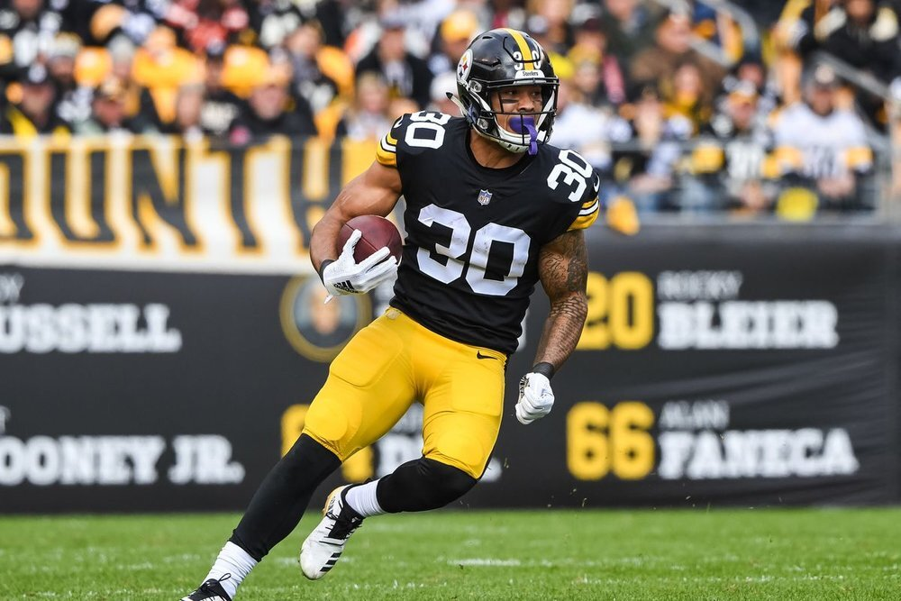

NOVEMBER 27, 2018 REGULAR SEASON AWARDS
Brightest Future
Trubisky & Saquon - Both players coming from Matt’s squad, though Trubisky has been dropped and added a few times 😂 Saquon’s talent is undeniable—I’m excited to see him with a serviceable QB and Head Coach next year. Trubisky is still a bit of a wild card, but it’s all there. If the Bears D wasn’t so good, we’d have seen him let loose more. While it woulda meant more picks, he would have had a monster season with less restraint. Andrew Luck - I really doubted Luck, and felt very inclined to include him here. The sky’s the limit (again) for Luck—what a comeback season.
Although we’ve come to the end of the road
It’s weird to think Brady’s no longer a serviceable QB1, or that he just simply may not be Tom-Brady-Good anymore. Equally so, while Rodgers has shown his brilliance, it’s been very on-and-off. I mean, next year we could be looking at drafting guys like Jackson and Mayfield over these mainstays.
Most Disappointing (not named Le’Veon Bell)
Tight Ends! What a crazy season for TEs, no depth, no consistency! Is this a new norm in the NFL? It’ll be really interesting to see how TEs are drafted next year with this in mind. To be more specific, Rob Gronkowski. He’s been so shitty and the Pats have hid his status so well, he’s been hard to predict week in and week out. Those drafting him high this year had a tough time overcoming his absence from what I hear on the streets.
Surprise!
Drew Brees you ageless wonder! What a season that I was about to write “It’s a lot of fun to watch the Saints offense this year with Brees operating.’’ Then I thought, damn we got the Chiefs and Rams O’s too, it’s a wonderful time to be alive in the 2018th year of our Scoring Lord—hopefully many more potent FFB seasons lie ahead of us. Honorable mention: Eric Ebron. When you match your career total for TDs in 12 games, you’re doing surprisingly well.
Worst Moves
Rick N’ More TDs - Drafting Bell at #1, then turning around and getting McCoy with his third pick. This team was doomed before the season started. Andy’s fourth and fifth picks didn’t get much better: Landry underperformed all season, and Olsen had to be dropped to make room for guys who could contribute right away. Ironically, see the Best Moves for more on Andy. House on Tyreek Hill - Trading Ertz for literally nothing (and Jones but to a lesser degree). Joel - Believing in McCoy for some reason.
Best Moves
Saved by the Conner - Not only for James Conner. Neil was able to gain McCoy and flip him for Newton, who’s ballin out and much more consistent than Watson. Great moves trading for Kittle and Cook for the now-IR’d Howard and the no-remaining-value-since-traded Tate. And though the league is still investigating this trade, getting Cam for LeSean was insane. Rick N’ More TDs - I loved the moves Andy made as well. He turned Bell into Ertz and Jones, who have been stellar. Also flipped McCoy for Brieda. Those three guys won Andy a game outright, though it was only one of three W’s for the season.
MOST VALUABLE PLAYER
You can make a case for Hill, McCaffery, Kamara (and maybe Brees). These guys single-handedly one games for playoff-bound teams, otherwise those teams may be on the outside looking in. That said, I don’t think this one’s going to be a big surprise. It’s James Conner by a longshot. The $3 waiver add the day after our draft speaks highly to his value and also to how dumb the other 9 of us are. Congrats to Conner for one of the best FFB values of all time, though the trend has been downward recently—we’ll see if it continues into the playoffs.
PLAYOFF PREVIEW
Saved by the Conner v. touchdown my pants
PJ squeaked in and Neil backed in, should be a great first round matchup. Both teams score in bunches yet both teams will be looking at their Rocks, Kamara and Conner, asking if they’ll produce at a championship level in the playoffs. Luckily, both teams have solid-af-RB2 in Chubb and Elliot. Lots of good matchups in this week’s (first half) game to watch closely: - TEs Kittle v. Olsen - RB3 Carson v. Yeldon - Evans v. Beckham Jr. Prediction: Saved by the Conner (-15) Saved by the Conner prevails, as Ryan or Roethlisberger slips and Newton thrives. *prediction is based on two-week matchup
House on Tyreek Hill v. Darnold Duck
It’s no doubt Darnold Duck is riding a nice high-scoring-and-win streak into the playoffs. But I locked up the highest scoring team this week too—Ebron, Brown and Hill are all tied for the league lead in receiving TDs (not to mention McCaffery’s streak). I believe this one comes down to RB2/Flex spots for RBs. Who will be better, and which manager will start the right guys? - Jake’s RB2s - Michel, Kerryon, Telvin Coleman, Josh Adams - Ians’s RB2s - Mack, Lindsey, Eckler, Ito Smith (RB3 at best) Prediction: House on Tyreek Hill (-11) Lots of TDs from McCaffery, Brown, Hill and Ebron. I eek it out even after picking the wrong QB to start each week.
PNW BOYS - OBITUARIES
Saquona Matata
What a year for Matt, came in talking all the shit, very Matt™. Just way to up and down all season though. Found his stroke at the end of the season, and nearly clawed into the playoff. I suspect will be looking out for Matt’s squad again next year, and he’ll continue to be Mr. Shit Talker, even after missing the playoffs. Pass the sticks.
Take Mahomes Tonight
Joel, you already know what I’m going to say: that McCoy deal boned you hard. I hope the Fortnite skins were worth it. I understand the need for an RB and lack of need at QB, but felt like you started McCoy this last week out of spite and there were better waiver RBs to be added. After the trade, McCoy produced less than 6 points over the final two weeks, to Newton’s 47 (currently #QB4). Would have done better to set your sights higher than the trash McCoy is (this coming from someone sorta rooted for the Bills for the last ten years). That said, being a Chiefs fan really helped this year: Mahomes is a football god and at least your team’s going to be fun to watch while you sit the FFB playoff out.

2018 - FINAL POWER RANKINGS It’s been a great season gents, great work everybody. It’s definitely been my favorite year playing FFB. Thanks for the great work, and for letting me be a way-over-the-top commissioner. Next week we’ll have the Regular Season awards and Playoff Preview, stay tuned.FINAL RANKINGS
regular season champion
#1 Saved by the Conner - (11-1)
A mainstay at the top of the leaderboard for some time now. After clinching the Regular Season title, Neil was seen enjoying a one-person champagne showered parade. Now he’ll look to rest up without a thing on the line this week, except a side-bet, and look forward to the playoff as the #1 seed. Clinched Playoff Berth
#2 - Darnold Duck (7-4)
The Duck has been on fire most recently. No better time to have your highest scoring week than the week you clinch your playoff berth. At once I looked at this team thinking poor Ian, so many injuries. Now Fournette’s suddenly returned to RB1 form to bolster this team’s already-nice attack.
#3 - House on Tyreek Hill (8-3)
Depth is suddenly a concern as I’m left to pick who to start most weeks. And I’ve made a few last minute changes that have really hurt me. Hill totally bailed me out this week, for example. Hoping Michel can get going again to give my team a solid RB1/RB2/WR1/WR2, while hoping to pick the right Colts TE each week.
Fighting for the last spot
#4 - Take Mahomes Tonight (6-5) | #5 Touchdown My Pants (5-6)
MATCHUP OF THE WEEK - These two teams in their respective games Joel wins, hes’s in. Joel loses, PJ’s (basically) in with a win. Interestingly enough, both teams face off against #9, #10 teams, and should get wins. However, Joel made an interesting trade last week with Neil. With two weeks left in the season, needing to win both games pretty much, Joel traded Cam Newton for LeSean McCoy. Since, McCoy has had a bye, and now has a matchup with the Jags, leaving him on Joel’s bench currently. Where Cam’s expected to have a huge week, Joel will look to Jameis Winston this week 😳 PJ needs a win to have a chance though, and that’s been a tough number to call this year. While #1 in points, and right in the middle for points-against, PJ’s struggled to get W’s as we all know. If you’re in the Seattle area, and PJ misses the playoffs, please go check on him to see if he’s safe.
Literally needs a Miracle
#6 - Saquona Matata (5-6)
I mean, Matata got a chance, but wow it’d be fucking insane. Last year’s champ could never get up for more than a week in a row. Saquon was a great pick, so was Mixon (when healthy), and on paper this team looked great—just not the year for Seifzilla. But I do believe a finish above PJ would hold some merit to Matt.
PNW Boys - Obituaries
#7 - Miller-Time, Smallwooded, Playoff Miracle, Toilet Bowl
At one point of the season I secretly feared this team more than any. Hopkins was my ride-or-die last year and Tony had a nasty receiving core I simply didn’t want to play agains. This offseason I expect much research will be done for how this team can find their true identity going into 2019.
#8 - The Johnson Fitz (II)
The Old Fogies just couldn’t get it done this year. I suspect Chris will be going with some more youth next year. I felt like this team made good moves throughout the year, but ultimately, it was hard to get all cylinders firing in one week, let alone stringing them together.
#9 - *uck you
Maybe if Luck woulda come on so strong early on Kris would have had a chance. Lots of Gronk owners are in this spot I know. My gal has Gurley and Gronk and is spending this weekend not giving a fuck about FFB. Seems like he was a common snag for that turnaround in Rounds 2/3, and that was a very costly decision.
#10 - Rick n more tds
The Curse of Le’Veon Bell - 2018, an Andy Turner Story The Brooklyn Dodgers had a saying: “wait ‘til next year.” I respected Andy’s moves, he tried every week, was active chatting with us, but it was just a rough year. If Andy keeps this up, he could be a Dark Horse next year, as I’m sure he’ll study up a bit before drafted a butthole like Bell.
WK 11 - WEEK ELE’VEON (NOT.)
Matchup of the week
Every single game has playoff implications, there’s a couple to watch real close. Touchdown My Pants v. House on Tyreek Hill Two top point getters, PJ’s clinging to playoff life! Saquon-a Matata v. Rick n More TDs I like to think Matt can still make the playoffs, but Andy’s team showed up big last week too. This’ll be a good one to watch for the whole league.
Waiver Wire Wrap-up
Dak Prescott $12 - Like the schedule ahead and what Dallas has been doing. Pretty quiet week, but I like the Dede Westrbook $1 pickup too, Jags look like they’re trending. Free Agent Auction Report (updated)
WEEK ELEVEN POWER RANKINGS I’m not sure the kind of commish I’d be if I didn’t comment on the Bell drama. He ruined Andy’s season. Cost me a game last week 100%. And could cost me a lot more with missing Ertz and Jones (and a zero from Bell). Really, truly, the worst FFB pick of all time. Here’s to next year (drinks myself stupid).
The Neil Division
* #1 Saved by the Conner - (9-1) ↔ Blah blah blah, Neil’s team is soooo great. We’ve heard this song before, will somebody please flip the record? * clinched playoff spot - needs 1 win, or 1 Hill loss to clinch 1st
BAGS ARE PACKED, DON’T FORGET THE TICKETS - DIVISION
#2 - House on Tyreek Hill (7-3) ↔ This loss to last place Andy really unraveled my bad decisions for the season. Seriously, I felt like I was watching Oregon absolutely collapsing against Stanford again. With matchups against Neil and PJ, got some work to do heading into the home stretch. But baring a monumental point collapse, I should be into the playoffs okay.
IN THE THICK OF IT - DIVISION
#3 - Darnold Duck (6-4) ↔ Three straight from Duck, and no signs of slowing up. Ian’s squad is averaging ~145 on the streak. Keep an eye on Josh Gordon. With the ever-reliable Cooper Kupp out the season, Ian will look for Gordon to be more consistent—while always explosive. #4 - Touchdown My Pants (5-5) ↔ As much as I like to drop PJ, he remains in control of his playoff destiny and has the most points in the league. He’s been feeling pretty good about his team all year, but at 5-5, it’s time to prove how dangerous he might be. #5 - Saquon-a Matata (4-6) ↑↑ Thee Dark Horse to make the playoffs. Last year’s returning champ seems geared up to make a run! Matt’s team has a really solid Points For, the middle of the league should avoid being tied with him in the standings at all cost. #6 - Take Mahomes Tonight (5-5) ↓ Two straight weeks for JJ scoring. Joel looks to ride the hot hand into the final weeks, but needs a bit more. Right in the thick of the 5-5ers, with a decent point lead on Miller Time, and a relatively kush schedule, Joel’s in the driver seat with the least resistance ahead to battle for the four spot. #7 - Hunt for a Playoff Miracle (5-5) ↓ Someone shoulda let these guys know Miller Time is after the game, not before. Stumbling and bumbling against a team without two starters, needed that win. It’s going to be tough to make the playoffs from here—currently in 7th in points for and matched up with Neil and Matt to end the season. Can’t afford another L.
LIVIN’ ON A PRAYER DIVISION
#8 - Rick n MoreTDs (3-7) ↑↑ Big week, Andy still making moves. Unfortunately, probably too little, too late. Great sportsmanship for sure. # 9 - Luck You (3-7) ↔ Two non-plays and still gets the win without putting up 100—hey it’s still a win! Technically still alive playoff-wise, but Kris has probably been least active. Maybe we’ll get a curveball here at the end. Gurley, Ingram and Cooper could play playoff-spoilers for teams with *uck You on the roster still. #10 - The Johnson Fitz II (3-7) ↓↓ Betcha didn’t think you’d see a non-Turner at the bottom, but it’s gotten to this point. Sorry Chris, I’ve liked a lot of things you’ve done along the way.
From Commish Bowen’s Desk
The trade deadline is approaching. All trades must be accepted before Wednesday, November 21 at 12PM ET. The trade deadline is only for trade transactions between teams. Owners are still free to add and drop players via free agency and waivers throughout the entire season. For more information on the trade deadline please refer this article.
WK 10 - TEN, A FUCKING TEN!
Waiver Wire Wrap-up
Marquez Valdes-Scantling seems to be the real deal, and at $7, the most expensive pickup. Notables: Dez Bryant at $1: PJ Loves Dez. Jets D at $6: wild, but the Bills offense is offensive. Sneaky: Bills D at $1 vs Jets Free Agent Auction Report →
Matchup of the week
Touchdown my Pants vs. Darnold Duck Really the only big matchup of the week, but it’s a big one. The loser basically needs two wins in the last two weeks to have a hope at playoffs. We’ll be watching this one closely.
WEEK TEN POWER RANKINGS Things are getting very serious! We’re looking at a bit of a division in the league now with records being more grouped. With the playoff picture shaping up, these rankings will probably be less shocking and more commentary, but I hope you all enjoy.
IN THE HUNT
#1 - Mantis Toboggan (8-1) ↔ You already knew who’d be here. Another big win this week over the slipping Pants. Nice move snagging MVS this week. I’m sick of James Conner! #2 - House on Tyreek Hill (7-2) ↔ Eeekin em out, but getting W’s (four-in-a-row). I’m feeling confident, but not as confident as a few weeks ago. Currently the highest projection for this week though.
#3 - Darnold Duck (5-4) ↑↑ The hottest team in the league besides Neil. Duck is firing on all cylinders, and basically added a whole new one with the Gordon breakout this week. #4 - Touchdown My Pants (5-4) ↓ Man it’s hard to rank PJ’s squad. 1st in points, but with 4 losses. Things look shaky: in the middle of the pack now with matchups against Hill and Duck remaining before playoffs—both of which will get to see the Pants without AJ Green. Yikes! Sanu is starting this week!? #5 - Take Mahomes Tonight (5-4) ↓ Gets a win, but a little slip here mainly due to Duck being on fire. Gotta love Mahomes though, yeesh. We’ve got a (hopefully) bonafide shootout this week with Matt—one that could shape the playoffs. Julio finally scored! #6 - Miller Time (5-4) ↑ This team is like a teenage Christina. One week she’s Cristy, the next: Tina, then Chrissy, and Christina again, then Chris, then Tinitinimomeeney. Note sure I can get behind a team named after Lamar Miller, though it brings back some nice Reggie Miller memories.
HALF-WAY THERE
#7 - Saquon-a Matata (3-6) ↓ Points scored would say that Matt’s in the playoff hunt, though he’s gonna need to do some more work to get there. Just a tough team to figure out week-to-week on who to start. I got to visit Matt with Barkley and Mixon on a bye, and barely got out alive—and that’s been the sort of narrative for the whole season. #8 - The Johnson Fitz II (3-6) ↑ Four straight losses, but still seems to be a threat week-to-week. However, there’s no slouch across the way this week. We’ll see if the Johnson can fitz in Neil for a big upset. The Lewis / White backfield could get the job done!
LIVIN’ ON A PRAYER DIVISION
#9 - Rick n MoreTDs (2-7) ↑ Andy’s getting am effort-based, not results-based, boost here. He keeps going for it, thanks for being a tough competitor through his rough season. There’s always next year. # 10 - Luck You (2-7) ↓↓ Without filling all spots in last game, Kris gets a bump down. Cooper got a TD, that was cool. Just not enough top-to-bottom to get out of the cellar, even with Gurley.
From Commish Bowen’s Desk
The trade deadline is approaching. All trades must be accepted before Wednesday, November 21 at 12PM ET. The trade deadline is only for trade transactions between teams. Owners are still free to add and drop players via free agency and waivers throughout the entire season. For more information on the trade deadline please refer this article. DYK? The Turners are in the bottom two spots in Points For, but have also had the most points scored against them. Unlucky last name, and of course, unlucky to draft #1 (and #2 in this case).
WK 9 - FEELIN’ FINE
A note from Commish Bowen
Leave feedback! FEEDBACK
- Matchup of the week -
Mantis Toboggan v. Touchdown My Pants Neil puts his 5-game winning streak on the line against the top point getter PJ. Drammmmaaaaa. Anyone wanna gamble on this one from the outside, you let me know. Current line has PJ favored -4.6. #degenz4lyfe
- Wednesday Waiver Wire Wrap-up - Getting to that point of the season where you have to start weighing how many dollars are left in the budget versus needed moves. I love it. Fav moves: Courtland Sutton is in a good place for more touches, but it’s uncharted territory for the rook. Dak’s a generally good FFB QB, and now he has got a true WR1 (talent). Free Agent Auction Report →
- WEEK NINE POWER RANKINGS -
#1 - Mantis Toboggan (7-1) ↔ Five straight, but facing a big test this week. Neil’s made some great moves to sure up his later weeks too. Love what this guy’s doing to stay a step ahead. That said, my favorite thing about Neil’s team is asking hypotheticals at it: can he continue to speak 5 TD performances into reality? We’ll see ¯\_(ツ)_/¯ #2- House on Tyreek Hill (6-2) ↑ Somewhere PJ thinks he deserves this spot, but ya homie didn’t lose three straight. Pretty weak performance last week but got away with the win, another big week this week against the resurgent Matatas. Happy to get Matt in a week where Mixon and Barkley are on byes—still gotta show up tho. - Note - Above this line: teams on winning streaks. Below this line: teams who have not won more than 1 straight. #3 - Touchdown My Pants (5-3) ↑↑ Just a win away from the logjam in 4th, playing against #1 this week—heading into the top crust or layer cake? I’m excited. Kamara reminded us a bit of his potential ay? #4 -Take Mahomes Tonight (4-4) ↓↓ Having such an impressive season considering the lack of moves—Joel’s vision from preseason’s proved amazing. After getting outmatched last week, Joel looks to bounce back against the reeling Fogies this week. That saaaaid: 7 players are Questionable, 1 Doubtful—yikes. #5 - Darnold Duck (4-4) ↑↑↑ Impressive week! Unfortunately, the Ducks have had the worst luck in the league so far with two of the three biggest losses in Cook and Fornette (minus Bell?) I liked moving Cook to get healthy right away and it paid off. Maybe Darnold keeps trending the right direction with a repeat in this week’s Duck vs. Luck matchup. #6 - Saquon-a Matata (3-5) ↔ ALMOST stole one from #1, damn that musta hurt. I’m excited to matchup this week with Matt, always a great shit talker. This team’s been bursting at the seams to move up, but has got held in the middle. It’s a real bummer that’s exactly where they’ll be come next week. #7 - No Njoku I have A Smallwood (4-4) ↓↓↓ I can speak from experience, having two matchups agains the No Njokus in the past three weeks has been stressful. I don’t want to see them in the playoffs, nor again ever. However—up against the bottom of the league this week, and with some holes in the lineup, I put the Smallwoods on upset alert, after all, they got Smallwoods. # 8 - Luck You (2-6) ↑↑ All but surely out of the hunt a week ago, what a difference a week makes. Only two games out with four remaining. Might be a Dark Horse—but we’ll see if waiting until Sunday to make moves can get it done 🤣 #9 - The Tired Old Fogies (3-5) ↓↓ On a freefall, Chris coulda spiked on us all with a Fitzgerald start, “We ain’t done yet!” But instead, old man Brady was a let down in primetime, leading the Fogies to their third straight loss. In true old guys fashion, The Fogies are starting Dion Lewis and James White in the same backfield this week, a TBT for last year’s Pats. #10 - Rick n MoreTDs (2-6) ↓ Man, Andy’s scratching and clawing, making moves. Just not able to get there in the end. Had a pretty good week, but ran into PJ on a good week which is tough to beat. Nice showing from the whole squad this last week, and a winnable one this week. Ready for some Fitzmagic baby.
{kind=link}
WK 8 - MAKE OR BREAK
A note from Commish Bowen
Half of the league has sent in feedback, and I appreciate it! There was definitely some feedback floating around in our group chat this week, feel free to put it in here so I can make sure it gets evaluated at season end. It’s just a couple questions, thanks! FEEDBACK
- Matchup of the week -
Mantis Toboggan v. Saquon-a Matata Saquon, Winston, and Cohen are all trending up. With Thomas, Mixon and Kelce to round out the squad, this team’s looking to be one of the tougher second-half matchups. Can the 6-1 Toboggan’s hold up under pressure? Big last minute win this week, OBJ’s groovin. I’ll be tuned in closely to this showdown this week. Honorable mention: Anthony and I met just two weeks ago in a 147-187 shootout. Familiar foes meet again this week, and hope to play to the same tune.
- Wednesday Waiver Wire Wrap-up - Honestly, I’m disgusted in myself picking up a Raider, and spending $12, but I hope he can be a nice spot-start for me. More proud of sniping both my matchup’s potential pickups. Also love Fitzgerald being picked back up, even after Arizona’s absolutely shit week. It didn’t feel right for him not to be rostered. +10 points for The Tired Old Fogies. Free Agent Auction Report →
- WEEK EIGHT POWER RANKINGS -
Following ESPN’s lead today, this week’s edition follows the theme:
players who must step up on all 10 teams
#1 - Mantis Toboggan (6-1) ↑ Alone in first, big matchup this week. Neil did just enough to move back into the top spot. Also, he’s betting on his future with the pending trade with Duck—looking to get Cook back for a playoff run. Step Up: Ezekiel Elliott RB8, but only one week over 20 pts. Neil’s move today is to sure up RB for the future, but he needs Zeke now. #2 - Take Mahomes Tonight (4-3) ↑ Huge down to the wire win over PJ, with Mahomes starting front and center as always. The late Gordon scratch was huge, but nice job overcoming it, Joel. Step Up: Doug Baldwin Can Baldwin return to form? Might not be as crucial with Edelman inbound, but obviously Joel and I both see WR as the spot needing help on this squad. #3- House on Tyreek Hill (5-2) ↓↓ Alone in second, but looking at RB and shaking. With Michel on the mend, and Bell lost in Oz, I look to Jalen Richard, Kerryon Johnson and Telvin Coleman to rotate at RB2, hoping the rest of the team can carry me for a while. Step up: Le’Veon Bell I think this one’s pretty obvious. I’d feel super solid if I had Bell, hopefully he’ll return sooner than later. #4 - No Njoku I have A Smallwood (4-3) ↑ Very consistent recently, this team’s solidifying it’s place in the playoff hunt. Hunt’s been great recently, and that looks like it’ll continue, and those WRs are no joke either. Step up: Kenyan Drake RB is a bit of a question mark outside Hunt. Drake excelling would make this team rock solid. #5 -Touchdown My Pants (4-3) ↓ Three straight loses, tough loss this week. But PJ’s been a great sport about it (sportsmanship award!) Can he right the ship this week, or will Andy hop on the train and deal PJ another L? Step up: Alvin Kamara It’s weird to say this after the stellar first half. But it’s now three straight weeks of not-so-much from Kamara. #6 - Saquon-a Matata (3-4) ↑↑↑ Dangerous team, lack depth outside current starting lineup. But the starting lineup is touggghhh. Step up: Bench This is football and I can’t imagine the starters to just stay healthy. Matt’ll need some bench help or savvy wavier moves at some point. #7 - The Tired Old Fogies (3-4) ↓ Been good the last couple weeks but not good enough for W’s. The old guys got a slow start but this team’s looking up—real veteran move saving some in the tank for later weeks. Step up: Keenan Allen Bro, where you been? WR24 and he’s even been healthy. Allen would be a huge lift if he can get up in the top 10. #8 - Darnold Duck (3-4) ↔ Strong showing last week, but came away with the L. Duck’s making moves this week, hoping to get inject some health and energy into this team who’s desperate for a win. Step Up: Leonard Fournette Or hamstrings altogether. But at least with Cook’s hamstring going out the door the team’s healthier. I can’t imagine this team going too far without a boost from Fournette. #9 - Rick n MoreTDs (2-5) ↓ Could Andy steal one from PJ this week, I think it’s definitely possible looking at the matchup. That said, Andy’s gonna have to make the perfect calls if he hopes to get out of bottom and into the middle of the standings. Step Up: Aaron Jones I felt Jones would have broken out as the lead back in GB. Honestly, step up Mike McCarthy, it’s clear he’s the most talented in the committee. Right now it’s hard to even consider a start for Jones though. # 10 - Luck You (1-6) ↔ Luck You definitely had an interesting Sunday, Lucking with the league, and not having a TE to play. No waiver moves today (still carrying Freeman on the IR too), we’ll see if there’s a trick up Kris’ sleeve. Step Up: Rob Gronkowski He who used to me the most reliable (when healthy), has fallen to iffy most weeks. With the Pats spreading the ball around to so many hands, it’s hard to see this changing, but maybe Gronk’s just saving himself and could explode soon.
WK 7 - OVER THE HILL
A note from Commish Bowen
We’re half way through the regular season, and it’s been great. Thanks to everyone for being so involved. If you feel inclined, please fill out this quick form for feedback. I want everyone to feel like they can leave the league if they want of course, but I’m asking some q’s about next season to get us thinking this way. FEEDBACK
Mid-Season Awards
Most Valuable: James Conner Neil’s rode James in every game this year and he’s been a rock—which doesn’t sound great to ride on but it’s got the job done. MVP is usually just a guy on the 1st place team right? Honorable Mention: Alvin Kamara Coach of the (Mid-)Year: Neil Calvert Neil’s swoop on James Connor has shaped the league. Great pickups throughout the year include Yeldon, Coutee and OJ Howard. Also he’s got the best record, so he’s doing something right. Honorable Mention: Andy Turner (After drawing the Poison card by drafting Bell, and all but dead a few weeks ago, now only 1 game out of 4th place after making some moves and winning two straight) Breakout Stud: Adam Thielen No one’s benefited from Cousin’s arrival, or maybe Cousins has benefited from him (and Diggs). Six straight 100+ yard games and no signs of slowing, only looking better and better each week. Honorable Mention: Saquon Barkley Steady Freddy: Todd Gurley II 23.7+ points in every single game this year, Gurley’s the model of consistency in fantasy and real life for the Rams. Honorable Mention: DeVante Adams & DeAndre Hopkins Slept On: Patrick Mahomes Pick #111, 12 QBs selected before him. He’s positioned Joel’s team as a big threat since week one. Honorable Mention: DeSean Jackson (last receiver drafted, currently WR21 even with a bye already had) Brightest Horizons: Sony Michel It looks like NE has finally found their premier back. I like everything about this guy, especially that he’s on my team. Since starting, he’s averaged 100+ yards and 1.3 TDs a game. Teams can’t stack the box to stop him, and so they won’t and this should continue. Has produced large without adding much in the receiving game at all yet, lots of potential to continue to grow into an even larger role. Honorable Mention: Calvin Ridley
- Matchup of the week -
Take Mahomes Tonight v. Touchdown my pants In a battle for playoff position, PJ looks to bounce back after a tough loss, and now two in a row. Joel looks put together two straight wins, as he’s been up and down all season, but now back in top 4 with playoffs on his mind.
- Wednesday Waiver Wire Wrap-up -
Ito Smith, Jermaine Kearse and Taylor Gabriel were most sought after, with Smith going for $19! I like Smith, but don’t see him valued that high unless Coleman were to be injured. The Falcons love to throw the ball and spread it around. Over the last three weeks, Smith has had an increased role, scored in all three games, and somehow only managed 10.6 points a week. This output would land him around the Duke Johnson, Kerryon Johnson, Kenyan Drake, Corey Clement range. The move for Freeman to the IR seems like a big deal, but he’s only be responsible for 17 points all season. There’s definitely upside, and Darnold Duck needed an RB this week, we’ll see if $19 = a win. Free Agent Auction Report →
- WEEK SEVEN POWER RANKINGS -
#1- House on Tyreek Hill (4-2) ↑↑ I know y’all sweating af if you gotta matchup with me. Three weeks over 157+, top two weeks all season, now the leading scorer. Better hope Tyreek has a cooler or you’re done. Michel looks elite. And, oh… I think I’ll get this Bell guy back eventually too. Come at me. #2 - Mantis Toboggan (5-1) ↓ Atop the standings for another week with a decent week to come out 5-1, all alone. I mentioned last week, but I feel the Yeldon-Connor train will slow up, and outside Watson, there wasn’t much support elsewhere this week. #3 - Take Mahomes Tonight (3-3) ↑↑↑↑↑ The most up-and-down team so far, but Mahomes seems primed to be a top-5 QB every week. Jones is destroying the league—we better just hope he somehow continues on the TD-less streak. Graham is clicking with Rodgers. Gordon is close to TGII-level. This team’s got weapons, and they responded well from the disrespect of last week’s rankings. #4 -Touchdown My Pants (4-2) ↓↓ With Kamara in a bye there wasn’t more than A Thielen producing much this week, as PJ took a tumble. Ain’t facing a joke this week (see MotW), PJ needs to avoid slipping three weeks in a row into the middle of the pack. “I dont like being on top. Give me the underdog story.” - PJ Hardcastle #5 - No Njoku I have A Smallwood ↓ I looked at the WRs on this team a while back and said I was terrified to face them, and correctly so—look at that production this week against me. No Njokin, there was a stretch in the Sunday morning games where four straight touchdowns on RedZone came from this team: Boyd, Burton, Rivers, and Hopkins. Smallwood had a Bigwood week, but W’s matter, so we see a little drop here. Facing the last place team this week, we could see Anthony back a playoff position next week. #6 - The Tired Old Fogies (3-3) ↔ A loss this week, but Chris knows his place in the league—these guys are old, wise veterans. Are they TB12’in us, just waiting for the later weeks to dominate on the way to the championship? Only time will tell. #7 - Rick n MoreTDs (2-4) ↑↑ Two and a row for Andy, the only team on a winning streak besides first-place Neil. Andy’s move for Ertz now gives him lock-ins with Wentz, Ertz, and Adams, all top-5 guys. We’ll see how he continues to fill the rest in, as he changes our perception of the MoreTDs. #8 - Darnold Duck (3-3) ↓↓↓↓↓ When you’re best scorer is your kicker, you deserve to plummet like this. I do expect a bounce back, but had to drop ya. Brees, Goff, Diggs, Smith-Schuster, Cupp, Fournette, Cook. These names should mean W’s, but just .500 so far. #9 - Saquon-a Matata (2-4) ↔ On a major free-fall, and in danger of being just a week out of last place. Matt started John Brown, Cory Davis, and Isaiah Crowell all in the same week, gross. Big matchup Andy this week in a battle of the tied-for-8th-place, and also real-life foes. Also, props on the Winston move (since you’re clearly okay with having a sexual predator on your team.) # 10 - Luck You (1-5) ↔ On the board, and starting his self-proclaimed championship run! Gronk’s not been helping, but the Pats seem to be on-one now. Let’s see if the return of Ingram can help lift this team. I do suggest making some moves on Waivers Wednesday Kris… Like, when one of your players is put on the IR—that’s a good time to drop them and replace them. Just a pro-tip. 🖤
WK 6 - HALF WAY HOME Free Agent Auction Report → No notes this week, keep up the good work everyone. Keep an eye out for next week’s extra special mid-season award extravaganza.
- Matchup of the week -
House on Tyreek Hill v. No Luck - With both teams at 3-2, it’s hard to see a scenario where the losing team at 3-3 is in a playoff spot—going into the second half of the season.
- Wednesday Waiver Wire Wizard -
1) $1 - Wendell Smallwood - No Luck High upside with Ajayi out, but still may be a committee backfield. Eagles looked suspect this last week too. 2) $1,000,000 - PJ - Panic after the big loss!
- Week Six Power Rankings -
#1 - Mantis Toboggan (4-1) ↑↑ When you come at the king you better not miss—Neil didn’t, crushing PJ this week. Neil spent big on Yeldon and it paid off. Lots of top-scorers on this team, but with Connor slipping (and Bell’s pending return), it’ll be interesting to see how Neil patches his impending holes. #2 - More Than A Thielen (4-1) ↓ Still the league leader by a decent margin in points for, but an off weak shows a vulnerability. Kamara’s reduced role this week is likely of little concern as Ingram and Kamara will both surely have large roles going forward. But it does go to show some weeks will be tougher than others, especially with little depth at RB. It’ll be interesting to see if Carson or Clement can be big players in now larger roles on both teams. Obviously Thielen is off to an amazing start too though, with 5 straight 100+ yard games. Jesus. #3 - Darnold Duck (3-2) ↑ Big week this week getting over the Hill. Duck’s approaching 2nd place in points for. Riding the Brees train this week, flying high or some shit. Fuck you for beating me, sorry, I mean gg. Diggs, Kupp and Smith-Schuster are gonna ball here out, I think this team’s gonna be tough going forward. But… depth/health at RB man be a concern here. Lindsay and Hines worked this week, but Duck could use a strong return from Cook and/or Fournette to solidify position. #4- House on Tyreek Hill (3-2) ↓↓ Man I blew it at TE, the week after trading the current TE #1 in the league (Ertz). Ebron does seem to be a good lock-in at TE going forward though, even if/when Doyle returns, it seems Colts are willing to play with a semi-West Coast offense. Again—I fail to choose the right QB. And picking the right guy may be harder going forward with Flex options now too: Edelman, Sanders, and Jeffery (with Dion Lewis and Kerryon Johnson on-deck). At least Michel looks to be a stud, solidifying my backfield. #5 - No Luck (3-2) ↑ There seems to be a trend of lack of RB depth, now I’m hearing all that preseason FFB advice again telling me exactly that. Hunt’s found his way back to what seems to be RB1 status, but Thompson, Miller and Drake are all question marks. Luckily, Luck’s depth is at WR, and Hopkins is returning to 2017 form just now.
#6 - The Johnson Fitz (3-2) ↑↑ It’s a sad week to see Larry Fitzgerald dropped, what a run. 👋🏻 But it’s a good week for Chris! That was a nice narrow victory over Matt, in a nail-biter coming down to Monday Night. The Johnson’s saw a productive week from many in the startling lineup, and throughout the bench. Love those kind of weeks, this team’s starting to look deeper and stable, climbing up the standings. #7 - Saquon-a Matata (2-3) ↔ Couple hard losses in a row, even with great days from Mixon and Barkley. Will Philly D (at $7) be enough to carry Matt over Mahomes this week? Personally, I’d also like to see Dr. Jekyll and Mr. Hyde (Isaiah Crowell), and Trubisky started this week for entertainment purposes, thanks. #8 - Take Mahomes Tonight (2-3) ↓↓↓ This team was hotttt to start the season, but seems very beatable now. Mahomes and Gordon are top dogs, but the rest of the pack’s been hard to get going in sync. Julio Jones is on pace for 2000+ yards and has had almost no impact in the league somehow—oh yeah, it’s because he hasn’t scored. #9 - Rick n MoreTDs (1-4) ↑ Big week from Andy in the Battle of the Turners! Woulda beat a lot of folks in the league. Inspired by Andy’s tutelage and tear-jerking halftime speech, Wentz, McCoy, Adams and Ertz all exploded for their best weeks so far. # 10 - Luck You (0-5) ↓ So many points left on the bench. So little for-sures outside Gurley. It’s hard to get out of the dungeon when you’re only willing to spend $3 on the waivers for the YTD. Maybe it’s time to make a move or two.
WK 5 - NEW SITE WHO DIS?
- Notes from the Commissioner -
Thanks for letting me write these over here y’all. I know it may be more difficult than opening the app, but it’s going to save me like an hour a week in writing these, and they should be more entertaining, since I an use links, images, videos, etc.. Writing in ESPN’s markdown language is basically impossible, and I spend so much time formatting it’s stupid. Let’s get to it. It’d be so cool if all our teams had team names. If Joel and Kris’ teams aren’t named by Thursday, I’m naming them both. I’d also like to take a minute to plug trades. Let’s make it happen folks: it’s that time of the year, stones are being set, where will yours lay? lol.
- Matchup of the week -
It’s gotta be Team Turner v. Rick n MoreTD’s. (But keep an eye on Neil / PJ too)
- Wednesday Waiver Wire Wizard -
WOW. 14 moves on the waiver wire today. My picks of the week going to Mantis, the big spender. Yeldon could be the guy for some weeks, though it cost Neil a pretty penny. Keke Coutee could be a great value too, doubling down on Watson’s productivity.
- Week Five Power Rankings -
#1 - Touchdown my pants (4-0) Another huge margin of victory, another 40+ from Kamara. It’ll be interesting to see how much Ingram takes away from Alvin going forward, but I’m not concerned. I’ll write more when someone beats him. Circling our late season rematch on the calendar now, PJ. [Video] Kamara swag level unparalleled
#2 - House on Tyreek Hill (3-1) Wentz & Jeff together again It was nice to have so many guys injured and suspended to start the year—then I couldn’t screw up who to start. This week I’m staring at the flex with 5 potential starts. I already hate not having Ertz to set at TE. Ebron/McDonald hopefully can produce… again if I pick the right one to start. #3 - Mantis Toboggan (3-1) ↑ Barely squeaked by Kris, but projected to beat PJ this week, this could be huge for the league parity. Neil’s waiver adds over the season have been great. Only concerns here: Zeke’s status and OBJ’s production. #4 - Darnold Duck (2-2) ↓ Great additions at RB to offset injuries to Cook and Fournette. I like the depth of this team a lot. Diggs, Kupp, Smith-Schuster and Kittle all have been very consistent. Lots to like here. Gotta drop someone to pick up a D, will Bears D be on the market soon, or a solid position player? #5 - Joel H (2-2) ↓ Showtime Mahomes killing my Broncos with this one Mahomes should be a league winner, but Joel’s 2-2. Perhaps his shitty team name is lowering team morale. The late scratch from Watkins buried Joel in a game that woulda slotted him in the second tier of the standings. #6 - No Luck (2-2) ↑↑ I’m terrified of playing against this receiver squad (and have two remaining matchups against Anthony). He’s got three guys who I think are solid 20+ers every game at WR. Waiver wired the shit out of two new mainstays: Ridley and Boyd. With all of this said, the points haven’t been there every week somehow. #7 - Saquon-a Matata (2-2) ↓ ↓ Couldn’t back up the shit talking, got slammed by 38 pts. Getting Mixon back should help, but to me there’s a too many bang or bust guys. Could be hard to choose the right matchups week to week, though Barkley has been incredible consistent, 20+ in each game. #8 - The Johnson Fitz (2-2) ↓ Big week from the old fellas. The team has to be going through some identify issues right now: looking in the mirror at the team name, and old guy wrinkles. Cook’s been a dream pickup, in the tight end wasteland. # 9 - Team Turner (0-4) Uncalled-for cheap shot at the Bills ✔️ Solid week, but sorry you had to come at me during it. It’s rare to have four 25+ point guys and lose. But what were you thinking with playing anyone’s D against the Rams phew, that -9 killed ya before I even got out the gate. Backin the Red Rifle this week! Stoked to see how Ingram looks too.
#10 - Rick n MoreTDs (0-4) I was wrong about last week, sorry. I like the activity from Andy this week though, looking to score wins now, not wait around for Bell. Andy’s self-proclamation: I’m having the worst szn.
WK 4 - MOVING WEEK - Matchup of the week - Mantis Toboggan v. Joel H. One team will get to 3-1, the other could move to the lower half of of the table.
- Wednesday Waiver Wire Wizard - No Luck - $2 Calvin Ridley (40pts last week)
- A friendly note from the Commissioner - Joel and Kris, name your teams. For god’s sake Kris, you have Gurley, the possibilities are endless! Joel you’re a Chiefs fan and have Mahommes, that should be a good start too.
Week Four Power Rankings
- Playoff picture -
1 - Touchdown my pants
3-0 Kamara, Kamara, Kamara! With Alvin, Rudolf and Theilen on this squad, PJ is set for at least 60+ from this trio every week. Outscoring opponents by 50+ on average.
2 - House on Tyreek Hill
Quite frankly, I’m a little concerned at my RB depth. But if Michel or Jones can get going, I should be fine.
3 - Darnold Duck ↑↑↑
Huge win this week with Cook and Fournette both out. Juju is Big Ben’s fav receiver right now, too. Scary team, but falls off a bit outside these fellas (and good ol Breesy).
4 - Joel H
Another good performance this week. I’m having a tough time making out how this team’s looking going forward. There’s a lot of talent, but I think it’s the kind of talent that will mean some weeks the wrong guy gets started, and it’ll end up costing a win or two.
- Outside looking in -
5 - Saquon-a Matata
New team name, same power ranking. I have a feeling Matt’s getting the win over PJ this week though, so this could be the Saquon-a Matata’s proving.
6 - Mantis Toboggan ↓↓↓
From second place and undefeated to 6th in the standings. Were the two wins a fluke? Need some consistency from Watson, I think Mantis remains in the mix.
7 - The Johnson Fitz ↑
This move up has more to do with No Luck’s last week. Will these vets be able to get it going all at the same time? Or will we see a Turner upset this week.
8 - No Luck ↓
Brutal game last week and facing the biggest mover this week (Duck). With the current projection going to No Luck, this should be a good matchup to keep an eye on for an upset, too.
- The Turners -
# 9 - Team Turner Gurley’s doing work. Team Turner’s trending up.
10 - Rick n MoreTDs
Sweet Andy, I think this is the week.
This is a meme.